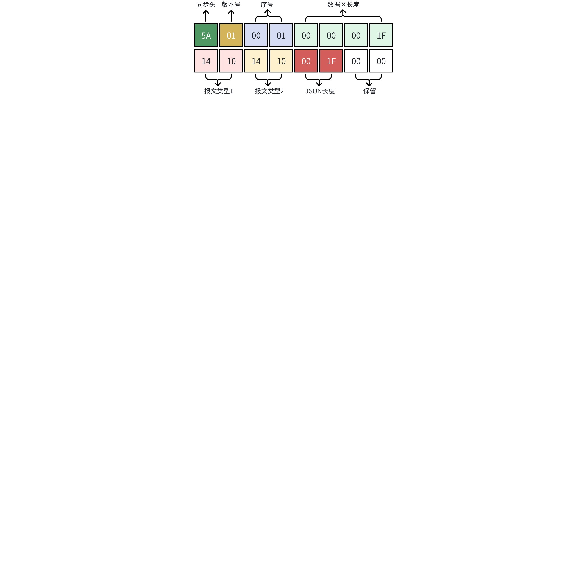
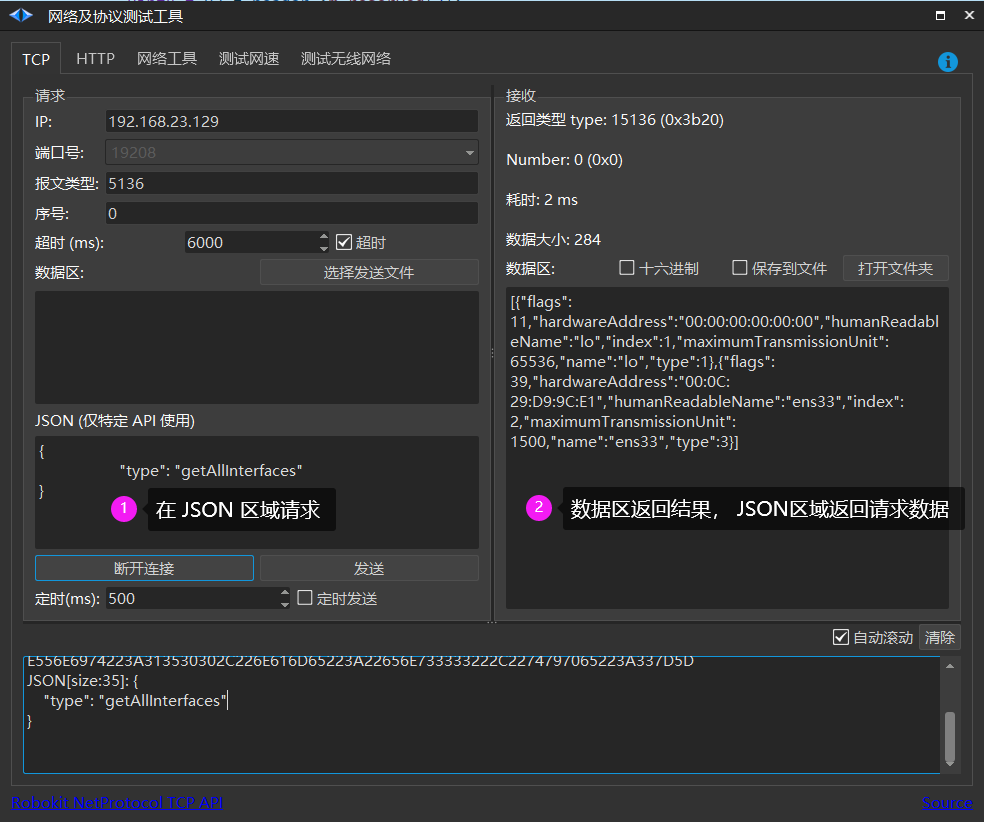

Roboshop 使用手册
Wiki table of contents
发布说明（软件下载）
第一章：关于本手册
第二章：安装环境要求
第三章：首页
第四章：设置
第五章：其他
附录 A - 属性说明
附录 B - 其他实施方法
Robod(守护程序)
Robod 发布说明
Robod 网络接口说明文档
Robod(SRC5000) 网络接口说明文档
问题分析
注意事项
版权声明
header-v2
SEER Robotics
Robod(SRC5000) 网络接口说明文档
Last updated: Jul 09
Log In or Sign Up
Robod(SRC5000) 网络接口说明文档
请求
播放音频
停止播放音频
获取所有网卡列表
根据网卡名称获取网卡信息
设置网卡信息
禁用网卡
获取WIFI列表
连接WIFI
获取所有内置的目录
查询指定目录文件列表
查看文件夹信息
查看硬盘信息
上传文件
下载文件
删除文件
获取所有串口信息
保存串口配置
清除串口配置
关机(关闭操作系统)
重启(重启操作系统)
启动监听的程序
停止监听的程序
激活控制器
获取 SRC 5000 信息
设置音量
获取日志列表
停止监听的程序
终端命令
ping
其他命令
停止监听的程序
停止监听的程序
停止监听的程序
获取 Robokit 数据
升级
响应
Robod(SRC5000) 网络接口说明文档
Modified July 9
请求
默认端口: 19208
报文如下:
0 results
Board

同步头
+
版本号
+
序号(number)
+
总长度-16
+
类型1
+
类型2
+
JSON长度
+ 保留
5A 01 0000 0000001F 1410 1410 001F 00 00
说明: 5A0100000000001F14101410001F0000 + [
路由器
区
(JSON)
] + [数据区]
为什么有类型1和类型2，是因为返回时 类型1会
+
10000返回，这时类型2保持发送时类型
路由器
区
(JSON)
: 从 16 + json长度 是整个 JSON 区
数据区: 从 JSON区尾部一直到整个报文尾部是整个数据区
请求
•
编号:5136(0x1410)
•
名称 : robot_core_operate_req
•
JSON: 下列 JSON 内容
•
数据区: 下列具体内容

Comments (0)
Go to the first comment
0 words
Help Center
Keyboard Shortcuts